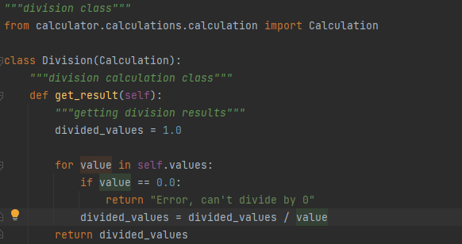
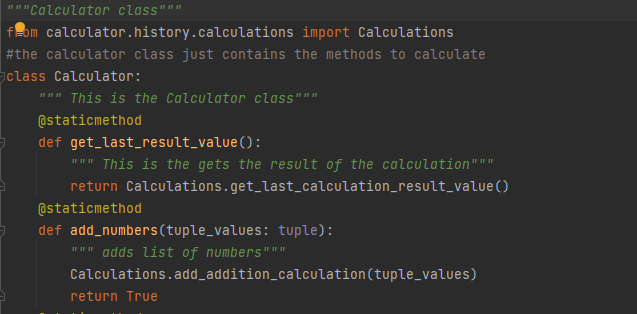
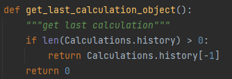
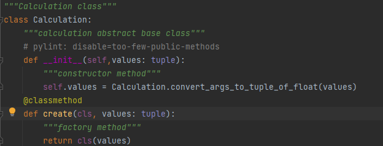

The fundamental principles of Object Oriented Programming are Encapsulation, Inheritance, Polymorphism, and Abstraction.
- Encapsulation
- Inheritance
- Polymorphism
- Abstraction
Encapsulation describes the idea of wrapping data and the methods that work on data within one unit. This puts restrictions on accessing variables and methods directly and can prevent the accidental modification of data. To prevent accidental change, an object’s variable can only be changed by an object’s method. Those types of variables are known as private variable.
A class is an example of encapsulation as it encapsulates all the data that is member functions, variables, etc.
Note: the use of "self" here is also an example of encapsulation that restricts outer programs to access the value stored in the self.
Inheritance is the capability of one class to derive or inherit the properties from another class. Basically, importing from a different class and using its methods is an example of inheritance.
Here, methods from the calculations class are being implemented in the calculator class.
In programming, polymorphism means the same function name (but different signatures) being used for different types. It basically means that the function needs to be able to adapt to different forms of data.
Here, if calculations.history is an empty list, it returns 0 while for calculatios that actually have a history, it returns the final value in the list.
An abstract class can be considered as a blueprint for other classes. It allows you to create a set of methods that must be created within any child classes built from the abstract class.
